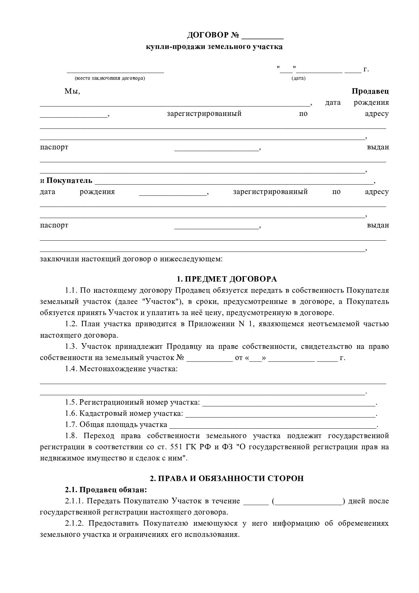
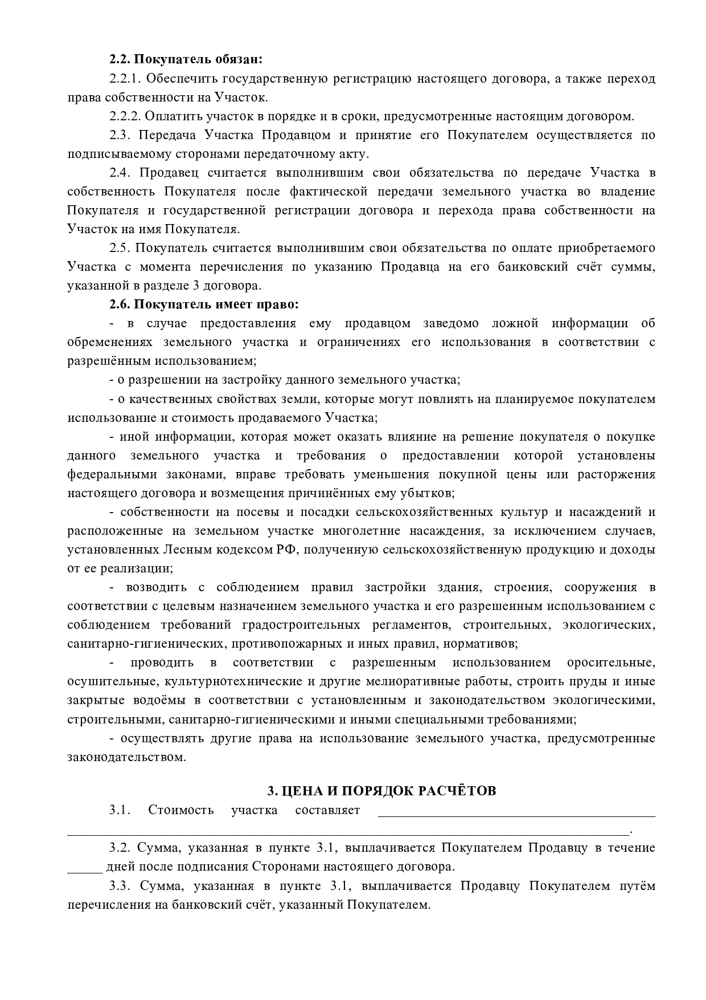
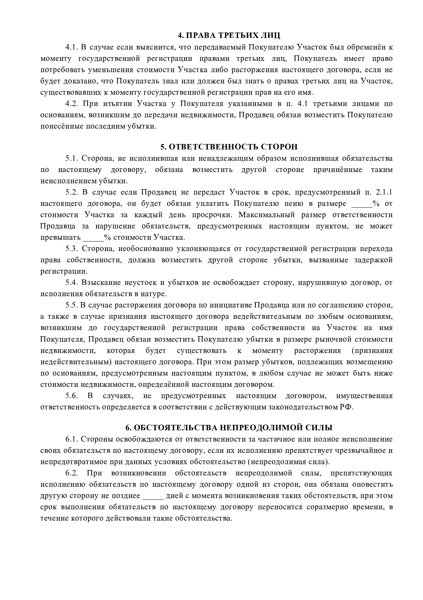
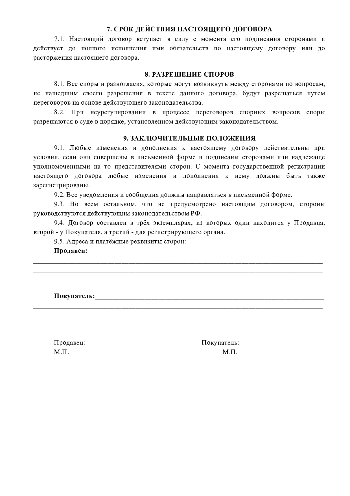

Консультации и договоры
>> Вернуться на главную <<
Фабула № 3.
Никушина Л.М. продает земельный участок (полученный ранее по наследству) в центре города К. индивидуальному предпринимателю автослесарю Михайлову В.В.
Пошаговая инструкция для гр. Никушиной по оформлению договора купли-продажи
Теоретические аспекты распоряжения унаследованным земельным участком:
Для приобретения права распоряжения имуществом, перешедшим к по наследству, необходимо в первую очередь вступить в права наследования в порядке, установленном в разделе 5 части 3 Гражданского кодекса РФ. Согласно положению части 1 статьи 1181 ГК РФ, «принадлежавшие наследодателю на праве собственности земельный участок или право пожизненного наследуемого владения земельным участком входит в состав наследства и наследуется на общих основаниях», и на принятие наследства, в состав которого входит такое имущество, не требуется никакого специального разрешения.
Таким образом, перед заключением договора купли-продажи земельного участка с ИП Михайловым В.В. Никушина Л.М. должна выполнить следующие действия:
-
обратиться к нотариусу для получения свидетельства о праве на наследство;
Оформить заявление на получение свидетельства можно в течение 6 месяцев с момента смерти наследодателя (п. 1 ст. 1154 ГК РФ), срок выдачи - по истечении полугода с момента открытия наследства (п.1 ст. 1163 ГК РФ). Исключение: срок может быть сокращен, если у нотариуса имеются достоверные документы, свидетельствующие, что обратившиеся наследники являются единственными претендентами на имущество умершего.
Способами принятия наследства являются:
-
наследование по заявлению, поданному наследником нотариусу;
-
фактическое наследование (ст. 1153 ГК РФ): в данном случае для признания гражданина вступившим в права наследования ему достаточно начать пользоваться полученным земельным участком, при этом за ним сохраняется право обращения к нотариусу за свидетельством о праве собственности в любое время, предоставив доказательства фактического пользования этим участком. Например, в «Обзоре судебной практики по делам, связанным с предоставлением земельных участков сельскохозяйственным организациям и крестьянским (фермерским) хозяйствам для ведения сельскохозяйственного производства» (утв. Президиумом Верховного Суда РФ 23.12.2020) к таким доказательствам предлагается относить договоры о предоставлении в пользование участка, находящегося в общей долевой собственности, а также любые относимые, допустимые и достоверные доказательства, подтверждающие фактическое использование земельного участка, если пользование происходило без оформления правоотношений.
-
на основании полученного свидетельства пройти процедуру регистрации права собственности на земельный участок в Росреестре – только после прохождения этой процедуры гражданин уполномочен свободно распоряжаться унаследованным земельным участком, в т.ч. продавать его.
Способы регистрации права собственности на земельный участок:
-
личное обращение в местное отделение Росреестра, ближайшее к месту жительства гражданина;
-
подача заявления и документов по почте;
-
подача заявления и документов в режиме онлайн на официальном сайте https://rosreestr.gov.ru/
При продаже земели у собственника возникает обязанность оплатить налог с прибыли от его реализации (НДФЛ) (п. 1 ст. 207 НК РФ) в размере 13% (п. 1 ст. 224 НК РФ).
Не облагается пошлиной доход с продажи участков, которые находились в собственности определённый период времени (п. 17.1 ст. 217 НК РФ). Для унаследованных объектов минимальный срок владения составляет 3 года (п. 3 ст. 217.1 НК РФ). Следовательно, если унаследованный участок был продан через 3 года после его получения, платить 13% не придётся. Если же сделка заключена раньше, то придётся заплатить налог.
Итак, для признания сделки купли-продажи унаследованного земельного участка законной, требуется выполнить следующий алгоритм:
-
Обратиться к нотариусу за получением свидетельства о праве на наследство (срок обращения - в течение 6 месяцев со дня смерти наследодателя).
Необходимые документы:
-
заявление на получение свидетельства;
-
паспорт;
-
документы, подтверждающие родство с наследодателем;
-
подтверждение прав умершего на объект;
-
документация на участок (и строения на нём) — выписку из ЕГРН с указанием стоимости объекта, кадастровый паспорт, данные о строениях, расположенных на участке (при наличии).
-
Ожидать истечения полугодового периода, установленного законом, для официального вступления в права наследования (п.1 ст. 1163 ГК РФ).
-
Получить нотариальное свидетельство о праве на наследство.
-
Обратиться с данным документом в Росреестр для регистрации права собственности на унаследованное имущество.
Необходимые документы:
-
паспорт РФ;
-
свидетельство о смерти наследодателя;
-
свидетельство о наследовании, заверенное нотариусом;
-
кадастровый паспорт на участок;
-
квитанцию об оплате госпошлины.
-
Получить выписку из ЕГРН с подтверждением права собственности на унаследованный земельный участок.
-
Заключить сделку купли-продажи на основе зарегистрированного права собственности.
! Допускается оформление собственности на унаследованный участок в Росреестре одновременно с проведением сделки купли-продажи. Для этого требуется согласие покупателя, а также полученное у нотариуса свидетельство о праве на наследование земельного участка.



